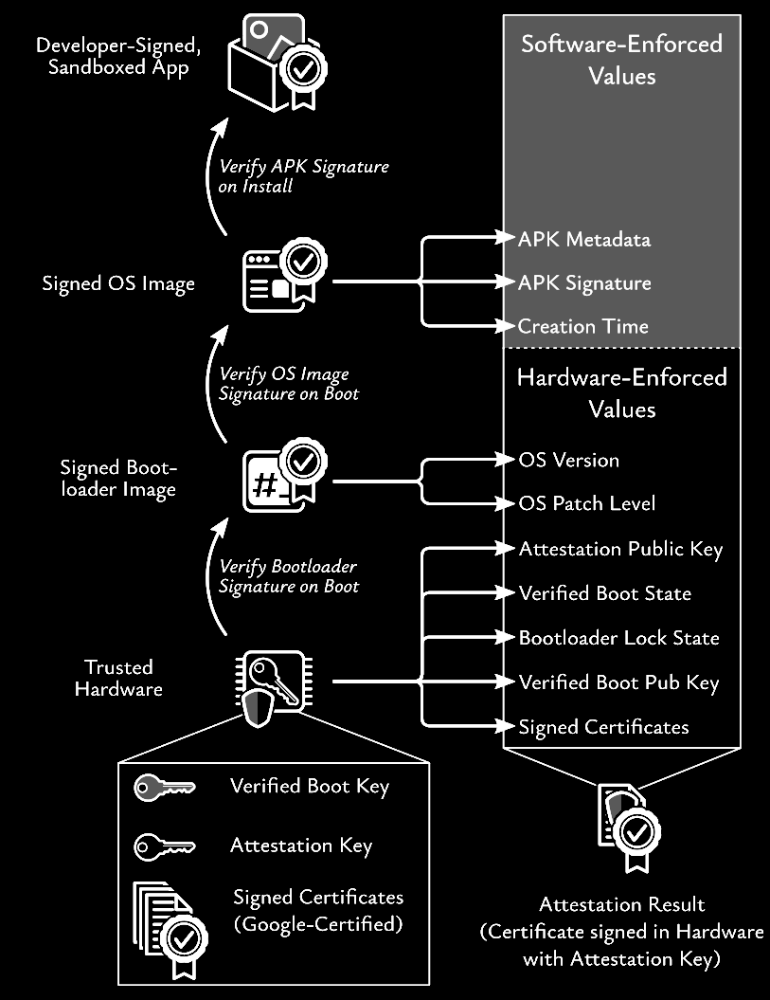

Android Attestation Deep Dive
Android hardware attestation links a generated key to the boot state, operating system, and installing application. This page follows this chain from boot through APK installation to server-side verification, including the certificate structure and failure modes encountered in production.
Android requires no special attestation setup comparable to App Attest on iOS. See also iOS App Attest Deep Dive.
Inspect a Real Attestation
Use the Attestation Collector to produce and explore the parsed Android attestation from your own device.

Tip
Figure 1 is referenced throughout this page and is worth keeping nearby.
Terminology
Throughout these docs, GMS-certified refers to Android devices that launched with a Google license to ship Google Mobile Services (GMS) (including the Play Store) and which passed Google’s device compatibility/certification process for that build. See Device Certification Terminology for a glossary of related terms and common (mis)uses.
Boot-Time Trust Chain
- Boot ROM (immutable in SoC) verifies the first-stage bootloader using SoC fuses / OEM root.
- Bootloader verifies
vbmetaand the partition chain via AVB.vbmetacontains the public key (or hash thereof) authorising images and rollback indexes. - If verification passes and the bootloader is locked, boot proceeds with
verifiedBootState = VERIFIED; otherwiseSELF_SIGNED,UNVERIFIED, orFAILEDstates are signaled. - dm-verity ensures runtime integrity of verified partitions (system/vendor/product).
- Rollback protection: bootloader maintains rollback index slots in tamper-resistant storage; images signed with older rollback index are rejected. Not all devices advertise this.
Attested System State
The RootOfTrust structure in the attestation extension contains:
verifiedBootKey: hash of the AVB root public key that authorised the boot images.deviceLocked: boolean derived from bootloader lock state.verifiedBootState: one ofVERIFIED,SELF_SIGNED,UNVERIFIED,FAILED.- Patch claims:
osVersion,osPatchLevel, and (on newer devices)bootPatchLevel/vendorPatchLevel.
Policy implication: The server can require deviceLocked=true, verifiedBootState=VERIFIED, and minimum patch
levels. It can also pin the expected verifiedBootKey, either restricting access to OEM firmware or admitting selected
enterprise or sovereign AVB keys.
App Identity at Install Time
- Signature Scheme v2/v3/v4 embeds signatures over the app contents at the APK level (post-Android 7).
- The platform verifies the signing certificate(s) when installing/updating an app.
Attested App Identity
The AttestedApplicationId section contains:
- package_infos
- package_name identifying your application
- version indicating the version of the application
- signature_digests: values (SHA-256 digests of the signing certificate(s)) pulled
from the Package Manager at attestation time.
Policy implication: The server must match the package name and signer digests of accepted release builds. Under key rotation, retain every legitimate signer digest. Re-attestation combined with minimum application versions can enforce updates.
Attestation Flow (Device and Server)
On-Device Production
- App requests a new key from KeyMint/StrongBox with required properties (algorithm, size, purposes, user-auth requirements).
- App calls attestKey with a fresh server-provided challenge.
- KeyMint produces a certificate chain for the key:
- Leaf certificate embeds the attestation extension (
KeyDescription) withRootOfTrust,AttestedApplication, and AuthorizationLists. - Intermediates up to a Google Attestation Root (for hardware-backed attestation on GMS-certified devices).
- Leaf certificate embeds the attestation extension (
- App sends {certChain, challenge, metadata} to your back-end.
Server-Side Verification Checklist
- Chain validation: X.509 path build and verify (signatures, BasicConstraints, EKU if present, issuer/subject continuity).
- Time validity: validate NotBefore/NotAfter on intermediates; tolerate known leaf-time quirks only if you apply strict freshness windows (see §6).
- Attestation root: anchor in Google’s published attestation-root set (keep updated).
- Extension parse: parse
KeyDescriptionwith a standards-compliant ASN.1/DER library; respect DER sorting for SET OF. - Challenge: exact match to your one-time challenge; reject reuse or replay.
- Root-of-trust: require
verifiedBootState = VERIFIED,deviceLocked = true; optionally pinverifiedBootKeyand enforce minimumosPatchLevel/vendorPatchLevel/bootPatchLevel. - App binding: require
packageNameand signer digest(s) to match your allow-list; optionally pinversionCodevia an app-side claim bound to the challenge. - Key properties: check
securityLevelinhardwareEnforcedis TrustedEnvironment or StrongBox; verifyuserAuthparameters (auth-per-use / timeouts) meet your policy. - Revocation: check against revoked attestation keys (Google feeds) and your own revocation lists; fail closed in high-assurance contexts.
- Decision & logging: produce an auditable decision with specific reasons (e.g., “boot not verified”, “signer mismatch”, “patch too old”).
User Authentication and Key Lifecycle
- User presence / authorisation: If
userAuthis required, KeyMint enforces biometric/PIN at key use. The authorisation policy (per-use, validity window) appears in the AuthorizationLists and is remotely checkable. - Invalidation triggers (enforced by Android, no server telemetry needed):
- Disable/reset of secure lock screen → auth-bound keys invalidated.
- Biometric enrollment changes (if so configured) → invalidate.
- Bootloader unlock or verified-boot failure → keys wiped/unusable; subsequent attestations show
deviceLocked=falseor degradedverifiedBootState. - Factory reset → keys deleted.
- Bind critical operations, such as credential issuance or high-value transactions, to authentication-protected keys whose attestation has already been validated.
Certificate Chains and Trust Anchors
- Expect a chain terminating in a Google Hardware Attestation Root for hardware-backed attestation.
- Always validate full chain: signatures, validity, path length, EKU (if present).
- Warden Supreme intentionally does not support Android keys with purpose
ATTEST_KEYcreating subordinate certificates or attested keys below themselves. Supporting that safely would make certificate-chain validation more complex and Warden will only consider it after thorough investigation to ensure length-extension attacks remain prohibited. - Reject software/hybrid attestation unless explicitly allowed for test scenarios; keep a separate trust store for emulators.
- Keep the attestation root set and revocation lists up to date on your server; retrieve and cache periodically.
Verification Pitfalls to Avoid
- Ignoring the challenge: always bind to a fresh, single-use nonce and reject replays.
- Trusting package name alone: you must match signing certificate digest(s).
- Accepting SELF_SIGNED states: only acceptable for tightly scoped test channels.
- Relying solely on patch level: combine with verified boot, device lock, and (optionally) pinned
verifiedBootKey. - Using too strict ASN.1 parsers and validation logic: Android devices come with encoding flaws that need to be accounted for. See Android-specific quirks.
- Time Drift: Out-of-sync clocks between clients and server can cause the PKIX validation part to fail. See also Clock Drifts and Temporal Validity.
- Assuming attested intermediate CAs are supported automatically: they are not. If you need an attested intermediate CA, first attest the key through Warden's regular flow, then manually issue a certificate for that key with the appropriate CA-related extensions and key-usage flags.
References and Libraries
See the consolidated References: